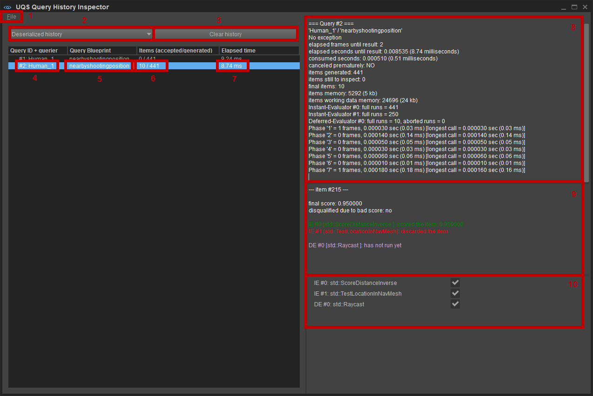
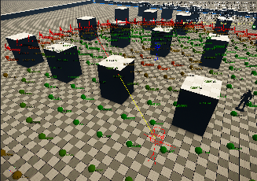

Overview
The Query History Inspector is a Sandbox plugin that allows the user to inspect details about previously recorded "live" queries. It can also save the current "live" history to a file for later inspection when, for example, the game is no longer running.
In order to track a query history the following CVar must be set to 1:
uqs_logQueryHistory 1The "live" query history will first be stored in memory (presuming the CVar is enabled). Only after that, you can actually save the history from memory to a file.
Query History + Historic Queries
Each "live" query builds a "historic" counterpart while running, this is called a historical query. All historic queries are referred to as a query history.
Internally, the Universal Query System (UQS) core keeps track of 2 independent query histories:
- a "live" history that builds up as more queries are started during gameplay time.
- a "deserialized" history that was loaded from the file.
The "live" history can be saved to a file at any point in time and be loaded again as the "deserialized" one. Both histories are separated and won't interfere with each other.
Details

- File: lets you save the "live" query and load a "deserialized" one.
- Deserialized/Live history: this dropdown list lets you switch between the "live" queries in the running game and the "deserialized" history (loaded from file).
- Clear History: clears whatever the currently selected history is (can be useful for example to free some memory). NOTE: Be careful - if the "live" history is currently selected and you clear it, then you won't be able to save its past historic queries to file.
- Query ID + querier: the unique ID of the selected historic query (these may not be strictly consecutive, but are guaranteed to be unique until re-starting the UQS Engine plugin). Double-clicking on this row will "teleport" the Sandbox Editor camera to a position close to where the query took place in the 3D world (presuming items were generated and that those items had a 3D debug proxy).
- Query Blueprint: name of the query blueprint of that selected historic query.
- Items (accepted/generated): number of items in the final result set and how many were generated in total at the beginning of the query.
Note: the numbers here might be confusing for composite queries since it's one of the child queries that generated items, thus the resulting items "bubbled up" to their parent query from where the caller can grab them. - Elapsed time: the total time it took (in milliseconds) from starting the query to when the query finished.
Note: since queries can run over multiple frames, the time might appear quite large despite there only being a small amount of time actually consumed. - Details about the currently selected historic query. A short summary of the most important details:
- No exception: the query didn't encounter any unforeseen managed exceptions (for example, a division-by-zero when scoring the distance between 2 points).
- elapsed frames until result: for how many frames did the query run. The fewer frames, the better.
- elapsed seconds until result: the total time it took from start to finish for the query. Can be used to pinpoint, for example, slow reaction times of an AI character when trying to find a good combat position.
- consumed seconds: this is the time actually spent by the query. It is the sum of the used time.
- canceled prematurely: whether the caller of the query canceled it prematurely or not. Canceling could happen, for example, when an AI character makes a new decision right in the middle of an ongoing query.
- items generated: number of items that the generator of the query created. This says something about how many items would have potentially been evaluated.
- items still to inspect: number of items that still need to be evaluated by the ongoing query. Usually, this will be 0, as the Query History Inspector window may only refresh after a query has finished (thus no more items to inspect).
- final items: number of items that finally ended up in the result set after being evaluated. This is usually a number close to how many items the query was asked to return, but could also be smaller if many items were discarded throughout the whole evaluation process.
- items memory: memory used to store the raw items. This is usually (number_of_generated_items * size_per_item).
- items working data memory: memory needed to keep track of the status of each evaluator, the score, and other internal data while evaluating all items.
- Instant-Evaluator #0/1/2/...: how often each of the InstantEvaluators has been running. It could be that some InstantEvaluators may have discarded the item before more InstantEvaluators had to run.
- Deferred-Evaluator #0/1/2/...:
- full runs: how often each of the DeferredEvaluators has been running from start to finish and without having been prematurely canceled;
- aborted runs: how often this DeferredEvaluator has been prematurely canceled due to discarding the item by another. This is basically an indication of whether or not some processing time was potentially saved.
- Phase '1'/'2'/...: number of frames and the time that was spent in this particular query "phase". During the execution of a query multiple distinct phases (that all do very specific work) run. If some of the phases appear with 0 frames, then it means the particular phase could be finished in the same frame as the previous phase. Here's a description of all 7 phases:
- Phase 1 = Preparing the generation phase by instantiating the generator.
- Phase 2 = Generating all items.
- Phase 3 = Creating debug representations of all generated items.
- Phase 4 = Preparing the evaluation phase: Instantiation of all Functions that act as input-parameters, instantiation of all InstantEvaluators & sorting by cost & evaluation modality and allocation of the working data of all generated items.
- Phase 5 = Running all cheap InstantEvaluators.
- Phase 6 = Sorting all survived items by their current score so far.
- Phase 7 = Running all expensive InstantEvaluators and all DeferredEvaluators on as few items as possible - to come up with the final result set as early as possible.
- Details about the item that is currently focused by the camera in the 3D world
- List of all InstantEvaluators (IE) and DeferredEvaluators (DE): this lets you disable/enable certain evaluators to see how the overall score was constructed by the remaining ones. This will basically change the item coloring of their visual representations in the 3D world to get a better feeling for how each evaluator type had an impact on the overall scores. Here's what it could look like:
